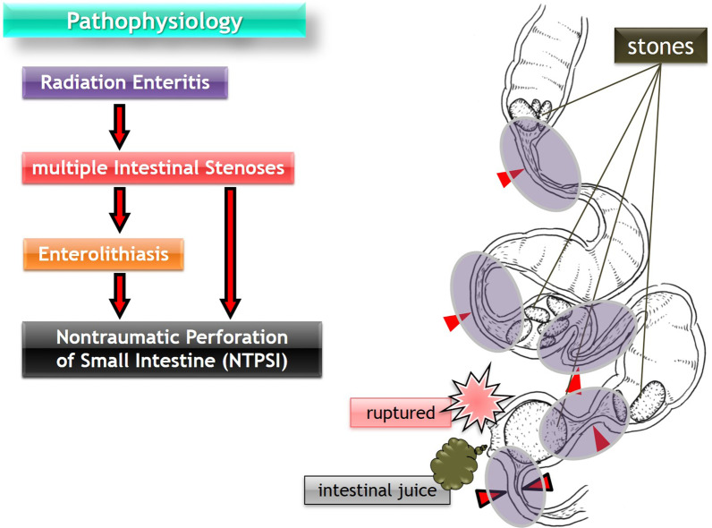
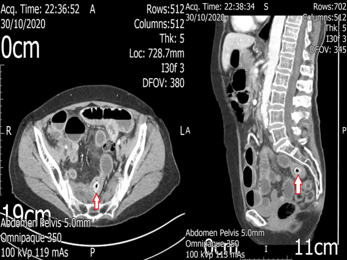

111 — Tắc ruột non do xơ hóa sau xạ trị tiểu khung / Radiation-induced small bowel obstruction
Tags: pattern:tac-ruot vung:ruot-non protocol:CT-bung-cap
Mức chắc chắn (certainty): tổng hợp y văn (literature synthesis) — tự biên từ các nghiên cứu đoàn hệ, tổng quan và ca bệnh mở có số liệu; không gắn một ca nguyên văn duy nhất.
Câu chốt: ở người đã xạ tiểu khung, tắc ruột non không phải "dính sau mổ" mặc định. Xơ hóa do xạ (radiation enteropathy) tạo hẹp đối xứng, đoạn dài, thành dày, ngấm thuốc kém nằm trong trường chiếu — và tỉ lệ phải mổ, phải cắt ruột, tái nhập viện đều cao hơn hẳn tắc do dính.
1. Tổng quan — xơ hóa sau xạ hình thành thế nào + ngưỡng hình ảnh
- Hai pha của tổn thương ruột do xạ (radiation enteropathy):
- Cấp (trong 4–6 tuần): phù niêm mạc, mất tế bào nhung mao, tiêu chảy, đau quặn — thường tự khỏi.
- Mạn (từ 6 tháng, đỉnh 1–3 năm, có thể > 10 năm): viêm nội mạc động mạch tắc nghẽn (obliterative endarteritis) → thiếu máu mạn thành ruột → xơ hóa dưới niêm mạc và lớp cơ, hyalin hóa collagen, dày thanh mạc, dính các quai vào thành chậu ("frozen pelvis") → hẹp lòng, tắc ruột.
- TẠI SAO hình ảnh trông như vậy (vật lý + mô bệnh): sợi collagen xơ có tỉ trọng thấp và ngấm thuốc kém hơn niêm mạc viêm; xơ lan đều theo chu vi nên thành dày đối xứng, đoạn dài, không tạo khối lệch tâm. Mạc treo bị xơ co kéo → quai ruột cố định, kéo thẳng, dính thành bụng/chậu. Thiếu máu mạn làm niêm mạc mất ngấm thuốc nhưng không có khối — đây là điểm phân biệt cốt lõi với tái phát u.
- Ngưỡng định lượng trên CT:
- Thành ruột non bình thường ≤ 3 mm; > 5 mm = dày bất thường (ở bệnh cảnh xạ: thường 6–12 mm, đối xứng).
- Lòng hẹp còn < 10 mm** kèm quai trước hẹp giãn **> 3 cm = tắc có ý nghĩa.
- Đoạn tổn thương do xạ thường ≥ 5 cm chiều dài, nhiều đoạn kế tiếp trong cùng trường chiếu.
- Ngưỡng liều: dung nạp ruột non TD5/5 khoảng 45 Gy (liều gây 5% biến chứng nặng trong 5 năm); nguy cơ tăng khi liều > 50 Gy, thể tích ruột non nhận liều cao lớn, hóa trị đồng thời, BMI thấp và có dính sau mổ trước đó. Ngưỡng thể tích (V15/V45) áp dụng chung chưa rõ — cần tra theo protocol từng trung tâm.
2. Mẫu hình + chẩn đoán phân biệt theo vị trí (gamut)
Ở bệnh nhân đã xạ tiểu khung vào cấp cứu vì tắc ruột non, gamut xếp theo tần suất và mức nguy hiểm:
- Hẹp do xạ (radiation stricture) — một hoặc nhiều đoạn, trong trường chiếu, thành dày đối xứng, ngấm kém.
- Dính sau mổ (adhesive SBO) — tiền sử mổ bụng, điểm chuyển tiếp đột ngột, thành không dày, không ngấm kém.
- Tái phát u/phúc mạc (recurrence/carcinomatosis) — khối lệch tâm, hạch, dịch, dày không đều, xâm lấn mỡ.
- Sỏi ruột/enterolith tại chỗ hẹp — cấu trúc cản quang trong lòng, hiếm nhưng điển hình ở ruột đã xạ hẹp.
- Rò/áp-xe do xạ (radiation fistula/abscess) — khí ngoài lòng, tụ dịch, đường rò, viêm phúc mạc.
- Liệt ruột do thuốc/điện giải — quai giãn đều, không có điểm chuyển tiếp thật.
Gợi nhớ R-A-T-E: Radiation stricture, Adhesion, Tumor recurrence, Enterolith/fistula.

Sơ đồ: viêm ruột do xạ gây nhiều đoạn hẹp → ứ trệ → sỏi ruột (enterolith) → thủng ruột non không do chấn thương. Nguồn: Surgical Case Reports 2021 (PMC8065084), CC BY 4.0 — ảnh nguyên bản, không chỉnh sửa.3. Bảng so sánh phân biệt (ma trận đối chiếu)
| Thực thể (entity) | Hình ảnh điển hình trên CT | Chốt vào (rule-in) | Chốt loại (rule-out) | Gợi ý xác nhận |
|---|---|---|---|---|
| Hẹp do xạ | Thành dày 6–12 mm đối xứng, đoạn ≥ 5 cm, ngấm thuốc kém, quai cố định trong tiểu khung, mạc treo xơ | Vị trí trong trường chiếu + đối xứng + đoạn dài + không khối | Khối lệch tâm, hạch to, dày < 3 mm từng đoạn ngắn → nghĩ u/dính | So phim cũ, đối chiếu bản đồ liều xạ; nội soi/CT lặp sau 4–6 tuần |
| Dính sau mổ | Điểm chuyển tiếp đột ngột, quai giãn trước, thành mỏng, không dày, không ngấm kém | Tiền sử mổ + chuyển tiếp tức thì + thành bình thường | Thành dày đối xứng đoạn dài + trong trường xạ → hẹp do xạ | Không cần sinh thiết; theo dõi đáp ứng sonde/dịch |
| Tái phát u/phúc mạc | Khối lệch tâm, dày không đều, hạch, nốt phúc mạc, dịch cổ trướng, xâm lấn mỡ | Khối + hạch + dày không đối xứng | Thành dày đối xứng, không khối, không hạch → xơ lành | PET-CT, sinh thiết nếu ảnh hưởng quyết định |
| Sỏi ruột tại chỗ hẹp | Cấu trúc cản quang trong lòng (thường 2–5 cm), quai trước giãn, thành dày quanh | Sỏi cản quang + hẹp phía dưới + quai giãn | Không thấy cản quang trong lòng → hẹp đơn thuần | CT đa bình diện, đôi khi X-quang bụng |
| Rò/áp-xe do xạ | Tụ dịch có vỏ, khí ngoài lòng, đường rò tới bàng quang/âm đạo/da, viêm phúc mạc | Khí ngoài lòng + tụ dịch + đường rò | Chỉ dày thành, không khí ngoài lòng → chưa rò | CT có cản quang, soi bàng quang/âm đạo, MRI nếu cần |
- Ảnh ghép đối chiếu: không ghép ảnh CT với sơ đồ (khác loại hình, khác chuỗi xung) — giữ nguyên từng ảnh để không sai lệch nội dung.
4. Protocol chụp + phân tầng xử trí
- CT bụng–chậu có cản quang tĩnh mạch, lát 1–2 mm, thì cửa (khoảng 60–70 giây). Không cần cản quang uống dương tính; nước uống 500–1.000 mL nếu cần phân biệt quai ruột. Bệnh nhân nôn nhiều: đặt sonde dạ dày trước khi chụp để giảm nguy cơ hít.
- Đọc theo 6 câu hỏi: (1) điểm chuyển tiếp ở đâu? (2) mấy đoạn hẹp? (3) thành dày bao nhiêu mm, đối xứng không? (4) ngấm thuốc còn hay mất? (5) có dấu quai kín/xoắn mạch không? (6) có khối/hạch/dịch/rò không?
- Nghiệm pháp Gastrografin (water-soluble contrast challenge): 100 mL Gastrografin qua sonde mũi–hỗng tràng, chụp X-quang bụng đứng sau 4–24 giờ. Trong tắc ruột do bệnh ruột xạ mạn, nghiệm pháp dự báo cần mổ với AUC 0,860; ở tắc do dính AUC 0,749.
- Vì sao phải phân tầng sớm — số liệu đoàn hệ 59 ca tắc ruột do xạ so 53 ca tắc do dính:
| Kết cục | Tắc do xạ (n = 59) | Tắc do dính (n = 53) | Ý nghĩa |
|---|---|---|---|
| Điều trị bảo tồn thành công | 33,9% | 58,4% | xạ thất bại bảo tồn gấp ~1,7 lần |
| Phải mổ | 66,1% | 41,6% | nguy cơ mổ cao hơn hẳn |
| Hoại tử/phải cắt ruột | 44,0% | 5,6% | gấp ~8 lần — chốt nguy hiểm |
| Tái nhập viện vì tắc lại | 28,8% | 13,2% | bệnh tái diễn, không "mổ là xong" |
- Chỉ định mổ tối khẩn (không chờ Gastrografin): dấu quai kín/xoắn mạch, mất ngấm thành, pneumatosis, khí tĩnh mạch cửa, dịch ổ bụng nhiều mới xuất hiện, đau liên tục không giảm, toan chuyển hóa, sốc.
- Không có hệ phân độ RADS cho tắc ruột non. Dùng phân tầng hình thái + đáp ứng điều trị; ghi rõ số đoạn hẹp và chiều dài đoạn hẹp vì quyết định cắt nối.
flowchart TD
A[Tắc ruột non ở người đã xạ tiểu khung] --> B[CT bụng chậu có cản quang 1-2 mm]
B --> C{Có dấu hiệu nguy hiểm?<br/>quai kín, mất ngấm, pneumatosis, dịch nhiều}
C -->|Có| D[Mổ tối khẩn]
C -->|Không| E[Sonde dạ dày + bù dịch + điện giải]
E --> F[Gastrografin 100 mL qua sonde]
F --> G{Thuốc xuống đại tràng trong 24 giờ?}
G -->|Có| H[Tiếp tục bảo tồn, cho ăn lại từ từ]
G -->|Không| I[Hội chẩn mổ: hẹp do xạ nhiều đoạn]
I --> J{Cắt nối an toàn?}
J -->|Có| K[Cắt đoạn hẹp + nối, cân nhắc bảo vệ bằng stoma]
J -->|Không| L[Mở thông ruột trên / dẫn lưu, trì hoãn cắt nối]
5. Biến thể bình thường và cạm bẫy
- "Frozen pelvis" là xơ lành, không phải tái phát: dày thanh mạc + dính quai + mạc treo xơ đối xứng trong trường chiếu; đừng gọi carcinomatosis khi không có khối/hạch/nốt.
- Nhiều đoạn hẹp: cắt một đoạn không giải quyết tắc nếu còn đoạn hẹp thứ hai phía dưới — phải đếm và đo tất cả đoạn trên CT trước mổ.
- Bệnh nhân quên tiền sử xạ: xạ tiểu khung có thể cách đây 10–20 năm; hỏi cả xạ trị ung thư cổ tử cung/trực tràng/tiền liệt tuyến, ghi liều và năm.
- Sỏi ruột cản quang bị đọc thành "dị vật": ở ruột đã xạ hẹp, sỏi hình thành do ứ trệ; hỏi tiền sử ăn hồng/đồ ăn nhiều xơ, nhưng không loại trừ hẹp do xạ phía dưới.
- CT không cản quang bỏ sót mất ngấm thành — luôn chụp có cản quang nếu chức năng thận cho phép.
- Mổ trong trường xạ: miệng nối trên ruột đã xạ dễ rò, hẹp và tái tắc; cân nhắc mở thông ruột trên thay vì cắt nối thì đầu ở bệnh nhân suy kiệt.
- Đừng chờ quá lâu: tỉ lệ hoại tử/phải cắt ruột 44% ở nhóm tắc do xạ — trì hoãn vì "chỉ là dính" là sai lầm chết người.
6. Tự lượng giá — Blind Quiz
Ca 1 — Nữ 62 tuổi, xạ trị ung thư cổ tử cung 8 năm trước, nôn và bí trung đại tiện 2 ngày. CT bụng–chậu có cản quang:

- Hỏi: mô tả 3 dấu hiệu chính? Nguyên nhân tắc? Vì sao đây không phải "dính đơn thuần"?
Bấm để hiện đáp án (findings + chẩn đoán)
- Dấu hiệu: nhiều quai ruột non giãn chứa khí–dịch; một cấu trúc cản quang hình bầu dục trong lòng quai hồi tràng thành dày (mũi tên đỏ); đoạn ruột quanh đó dày đối xứng, ngấm thuốc kém, không có khối lệch tâm.
- Chẩn đoán: sỏi ruột (enterolith) bị kẹt tại chỗ hẹp do xạ — biến chứng hiếm nhưng điển hình của ruột non đã xạ: hẹp → ứ trệ → sỏi hình thành → tắc hoàn toàn.
- Vì sao không phải dính đơn thuần: thành dày đối xứng + đoạn dài + trong trường chiếu + có sỏi tại chỗ hẹp; tắc do dính thường có chuyển tiếp đột ngột và thành mỏng bình thường.
- Xử trí: hội chẩn mổ sớm; nếu mổ, phải xử lý cả đoạn hẹp phía dưới chứ không chỉ lấy sỏi.
- Phản biện nguồn: ca gốc là ca bệnh đơn lẻ (Clin Case Rep 2021, PMC7981604); sỏi ruột là nguyên nhân hiếm, không đại diện cho phần lớn tắc ruột do xạ (thường chỉ do hẹp). Không vì thấy sỏi mà bỏ qua đánh giá hẹp do xạ.
- Nguồn ảnh: Clinical Case Reports 2021 (PMC7981604), CC BY 4.0.
Ca 2 — Cùng bệnh nhân, hỏi về cơ chế: tại sao ruột đã xạ lại tạo sỏi và thủng?
- Hỏi: sắp xếp đúng chuỗi bệnh sinh? Vì sao thủng xảy ra ở đoạn hẹp nhất?
Bấm để hiện đáp án
- Chuỗi: viêm ruột do xạ → nhiều đoạn hẹp → ứ trệ → sỏi ruột → tắc/thủng tại đoạn hẹp nhất.
- Vì sao thủng: đoạn hẹp nhất chịu áp lực cao nhất (Laplace: áp lực thành ∝ áp suất × bán kính) trên nền thành ruột đã xơ, mỏng và thiếu máu → dễ rách; sỏi cứng cọ sát làm mỏng thêm.
- Nguồn ảnh: Surgical Case Reports 2021 (PMC8065084), CC BY 4.0.
Bài liên quan chéo
- 100 – Tổng quan hệ Bụng
- 162 – Tắc ruột non/già, quai kín & thiếu máu mạc treo
- 1667 – Tắc ruột non do dính trong thai phụ
- 1665 – Rò trực tràng–âm đạo sau xạ trị
- 112 – Chảy máu trực tràng muộn do viêm trực tràng xạ
Không dùng để chẩn đoán độc lập khi chưa có người hướng dẫn.